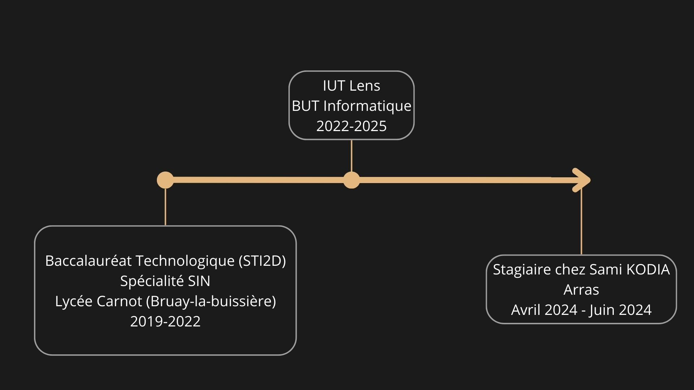

About Me


I am Dylan BALLET, 19 years old, a student at IUT de Lens majoring in Computer Science.
As a former STI2D student with no prior knowledge in programming, I decided to join IUT de Lens to pursue my dream of becoming a developer.
In the first year, I learned a lot, and despite the challenges, I persevered.
In the 3rd semester, we were introduced to web development, and I decided to specialize in it because I felt more comfortable than in other subjects.

My Hobbies
In my free time after classes, I meet my friends to either spend time at the pool, play table tennis, or badminton.
I am a big fan of volleyball, but I currently don't have the opportunity to play this sport.
I also play video games, especially survival and sandbox games.
Finally, I am a drummer in two music bands, and I used to play the saxophone.